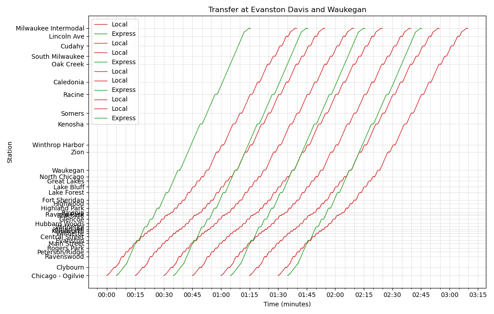
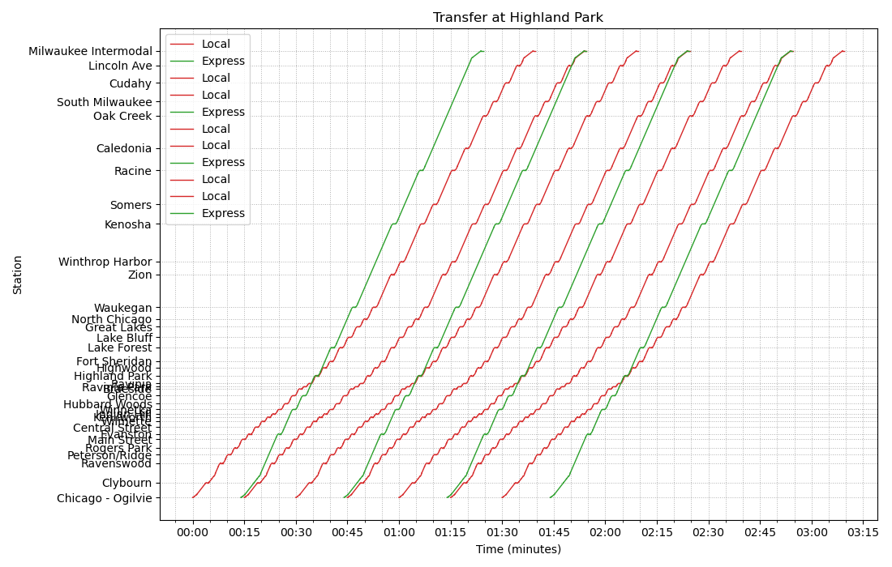
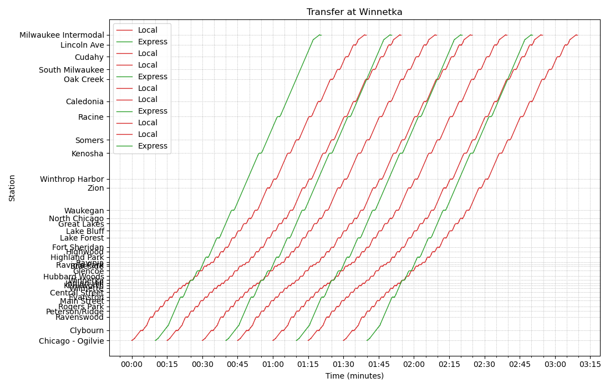
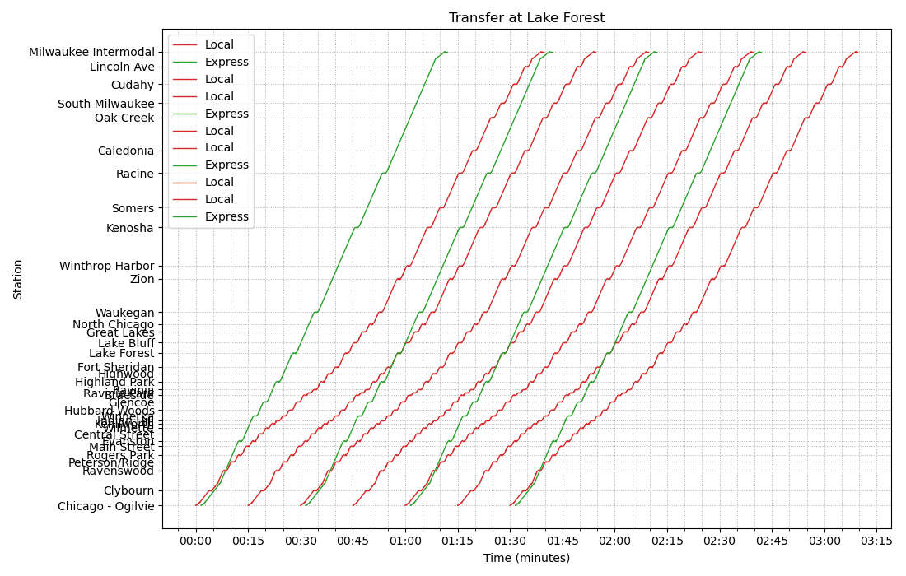

Union Pacific North Line¶
Current situation¶
The Union Pacific North Line (UP-N) is currently the third busiest line on the Metra system, behind the BNSF Line and the Union Pacific West Line. As of 2025, 457,000 riders ride UP-N each month, on Ravenswood is the third-busiest Metra station outside the downtown terminals area, with 2630 weekday boardings in 2018, behind only Route 59 and Naperville.
The line serves several kinds of communities. The Evanston and Chicago stations serve dense urban neighborhoods, and Northwestern University is located in Evanston. Between Evanston and Great Lakes lie the walkable, and affluent North Shore suburbs oriented around the rail stations, with density decreasing further north. Great Lakes serves one of the main naval bases of the US Navy, and the Waukegan-North Chicago area is a historical satellite city of Chicago. North of Waukegan lie smaller satellite cities and suburbs surrounded by farmland.
Along the entire line, historic downtowns are oriented around the stations. The rail line shaped the North Shore communities, with the parallel C&NW (now the UP-N) and the CNS&M (North Shore Line) competing for passengers. The dense, rail-oriented development has caused UP-N to have the highest rate of access to stations via walking/biking of any Metra line.
Evanston’s downtown has a high number of jobs, and Evanston’s Northwestern University is a large and prestigious university. Great Lakes is the US Navy’s largest training installation. Lower-density employment nodes cluster along the line, but the employment in the north suburbs is quite spread out, with many major nodes far from the line.
Reverse-peak demand is high along the line. Chicagoans travel to Evanston to reach downtown employers and Northwestern University, to Lake Forest to reach suburban employers, and to Braeside to reach the employers on the Lake-Cook Rd corridor (at both Lake Forest and Braeside via shuttle buses).
During the summer concert season, demand to Ravinia Park (a popular concert venue) is very high.
Line characteristics¶
The line and stations are currently owned by Union Pacific and operated by Metra. There is almost no freight service south of Lake Bluff, and freight north of Lake Bluff is infrequent and serves only industrial sites along the line.
Jobs¶
Intermodal connections¶
Characteristics north of Kenosha¶
Service planning¶
Required infrastructure investment¶
Purchasing the line from UP¶
As this line has extremely low freight traffic, it is likely prudent to purchase the line from UP, as this would avoid future disputes between Metra and UP, especially given that UP has been embroiled in a dispute with Metra for several years.
Electrification¶
Upgrading to 90mph¶
Kenosha-Milwaukee double track¶
High-level platforms¶
Triple or quadruple track¶
The UP-N line does not provide express service like many other Metra lines do, as it is entirely double-track. During rush hour, some trains skip a few stops, but much more time savings could be provided by a true express service.
The use of a clockface schedule (in which the schedule repeats each hour) will allow express and local trains to overtake each other at the same locations every time. This will minimize the amount of triple- or quadruple-tracking needed.
Feasibility of triple or quadruple track¶
Possible scenarios¶
For these scenarios, we added high-ridership/major stations from Evanston Davis St north as intermediate stops on the express train: Evanston Davis St, Winnetka, Glencoe, Highland Park, Lake Forest, Kenosha, and Racine. We assume that much of the line is upgraded to 90mph, and that the rest is upgraded to 50mph, except that the final approach to Ogilvie is upgraded to 30mph (via improved turnouts and track geometry).
We assume that local trains depart every 15 minutes, and that express trains depart every 30 minutes. Then, we want to figure out at which stations we should provide timed cross-platform transfers, which will tell us when the express trains need to depart Ogilvie after the local trains depart, and tell us which locations need to be triple- or quadruple-tracked. (We assume the need to quadruple-track at passing locations, but more timetabling work could identify locations where only a triple track would be necessary.)
In our first scenario, we provide timed cross-platform transfers at Evanston and Waukegan. Express trains leave Ogilvie northbound 4.5 minutes after the previous local train leaves. This requires quadruple-track through Evanston and North Chicago-Waukegan. (Quadruple track through Zion is also required in the pictured scenario, but alternately the local train could dwell longer at Waukegan to allow the express train to go first.) Additionally, passengers can transfer from northbound express to northbound locals and southbound locals to southbound expresses at Kenosha, waiting around 30 seconds on the platform. (Express trains could also be made to hold longer here, to allow transfers in the other direction.)
In our next scenario, passengers can make a cross-platform timed transfer at Highland Park, and can make a northbound express-to-local (and a southbound local-to-express) transfer at Lake Forest. This likely requires quadruple-track through Highland Park and into Milwaukee Intermodal, but we do not recommend this option because the express train would leave only 1 minute before (northbound)/1 minute after (southbound) the local train, increasing the chance of delay and the chance that the signalling system would be unable to handle this short spacing between trains.
Our next scenario allows cross-platform timed transfers at Winnetka, northbound express-to-local at Glencoe, and northbound local-to-express at Racine. This likely requires quadruple-track between Kenilworth and Glencoe and between Racine and South Milwaukee.
Our final scenario allows cross-platform timed transfers at Lake Forest. There are some one-way transfers available at other locations, more inconvenient than in the previous scenarios as the passenger would need to wait longer. This would require quadruple-tracking through most of the urban part of the corridor (through Chicago).
Costs¶
The costs of triple- or quadruple-tracking are hard to predict for locations north of the Winnetka grade separation.